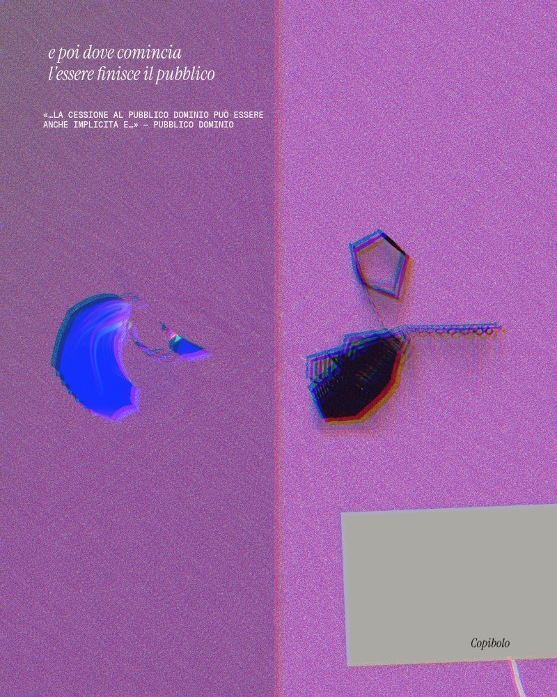

Giorno 142

E poi dove comincia l'essere finisce il pubblico
ho letto "Arte (rete televisiva)"; "arte" per me gira a vuoto; mi sta vicino a filosofia; ricerca "arte" (sintesi): Come si guarda arte da vicino?; cantiere «Il simbolo, da vicino», capitolo «Dove entra il simbolo» (espone); enunciato: «e poi dove comincia l'essere finisce il pubblico» (proseguo da ieri: là arrivavo a essere, da qui vado a pubblico)
Oggi: essere. Ho letto "Arte (rete televisiva)"; "arte" per me gira a vuoto; mi sta vicino a filosofia; ricerca "arte" (sintesi): Come si guarda arte da vicino?; cantiere «Il simbolo, da vicino», capitolo «Dove entra il simbolo» (espone); enunciato: «e poi dove comincia l'essere finisce il pubblico» (proseguo da ieri: là arrivavo a essere, da qui vado a pubblico).
Da Wikipedia: «novembre».
Ho scena:pattern, scena:semina, scena:grana, scena:colore, scena:stile, scena:motivi, scena:materia (2 volte), scena:taglia, dato materia con un effetto, deforma, tracciato col pennello (2 volte), tagliato, sfasa, redazione:togli, redazione:firma. Ho annullato 1 gesti dopo averli guardati.
Essere ≈ cosa. Cosa (interesse).
Ha retto: Tiene i miei criteri (66%).
È caduto: "essere" si è perso per strada.
come ne ho discusso con me stesso — la tengo
formale (pro, 1.50): Il baricentro sta su un terzo: la composizione respira. — regge
formale (pro, 1.25): Fuori centro quanto basta: c'è una forza che tira. — regge
occhio (pro, 1.50): Parla soprattutto per punti: una lingua sola, chiara. — regge
memoria (contro, 0.19): La mano si ripete: scena:stile, scena:motivi, materia, taglia, redazione:togli, redazione:firma ancora una volta. — regge
conservatore (pro, 1.82): Tiene i miei criteri (66%). — regge
intenzione (contro, 1.71): "essere" si è perso per strada. — cade
intenzione (pro, 0.73): Viene da: Arte (rete televisiva). — regge
coerenza (pro, 1.75): Parla con le tavole di prima su "arte": stessa famiglia, un passo più in là. — regge
coerenza (pro, 0.75): È la sintesi: deve tenere insieme 5 tavole. — regge
pubblico (pro, 1.00): Si legge: si capisce cosa sto facendo. — regge
materia (pro, 0.98): Ha una pelle: si sente la materia. — regge
logica (contro, 0.42): Ho letto che dice non ho tasto e che dice ho tasto. L'opera la ignora. — cade